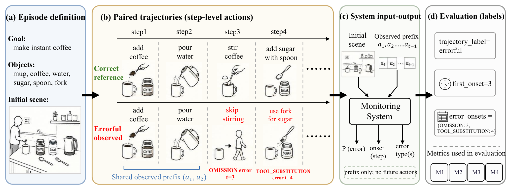

HelpMeOut: A Neuropsychology-Grounded Benchmark for Error-Aware Monitoring of Household Task Execution
1University of Auckland, New Zealand2MBZUAI, United Arab Emirates

Abstract
We introduce HelpMeOut, an embodied AI benchmark for error-aware monitoring of household task execution. Existing embodied household benchmarks typically assume that humans execute tasks correctly, but this assumption does not hold for cognitively impaired persons or older adults whose everyday activities produce structured execution errors. To address this gap, HelpMeOut operationalizes research on everyday action errors into 20,000 paired activity episodes, covering nine neuropsychologically motivated error categories. In each episode, agents observe a streaming human activity trajectory and must monitor whether the execution is unfolding correctly, diagnosing any structured errors as early as possible. Results show that current methods perform poorly as error monitors, often missing when execution goes wrong. These results suggest a gap left by standard goal-inference and task-completion benchmarks, making HelpMeOut a testbed for error-aware assistive agents.
Benchmark at a Glance
Error Generation

BibTeX
@inproceedings{wang2026helpmeout,
title = {HelpMeOut: A Neuropsychology-Grounded Benchmark for Error-Aware Monitoring of Household Task Execution},
author = {Wang, Haoran and Huang, Jingwei and Duan, Anqing and Ahn, Ho Seok and Macdonald, Bruce},
booktitle = {Conference on Robot Learning (CoRL)},
year = {2026}
}